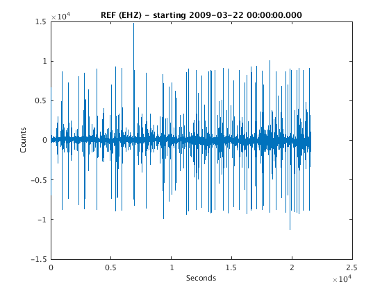
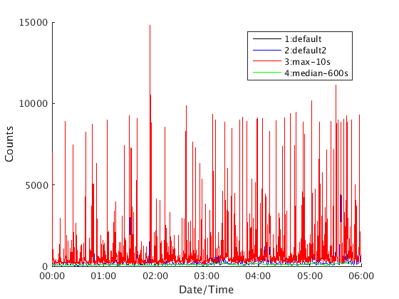
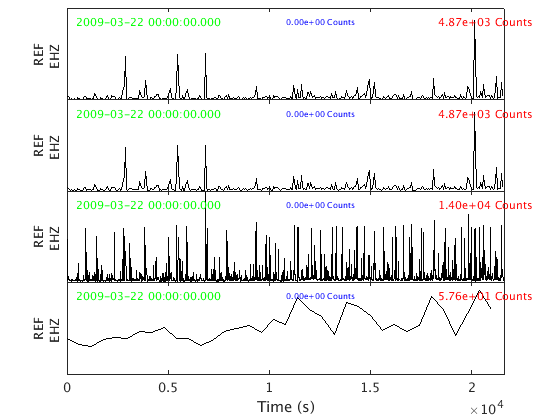
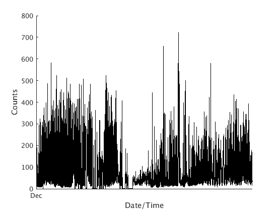
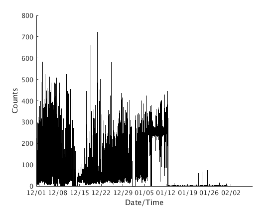

RSAM Cookbook
Contents
Short explanation
RSAM is essentially just a downsampled version of continuous seismic data, making it easier to examine long-term trends in the data, e.g. to recognize periods of unrest, episodes of tremor, etc. The properties of a GISMO RSAM object are:
- dnum = date/time of time-windows corresponding to each data value, as a MATLAB datenum.
- data = each data value is the RSAM value for a particular time window
- measure = records which statistic was used. Default "mean", which implies that each data value is the mean absolute value of the seismic waveform during the corresponding time window.
- units = records the units that the data is expressed in. Default counts, which implies uncalibrated units straight out of the digitizer.
- ChannelTag = records the ChannelTag object corresponding to the time series expressed by dnum and data. A ChannelTag object records the network, station, location and channel code.
- snum = the MATLAB datenum corresponding to the start time/date - equal to the lowest value in dnum.
- enum = the MATLAB datenum corresponding to the end time/date - equal to the higest value in dnum.
- sampling_interval = the length of the time window for each RSAM data sample, in seconds. (Default 60 seconds)
Longer explanation
RSAM stands for "Real-time Seismic Amplitude Measurement". An RSAM object is a data type that holds RSAM data. Typically each RSAM value is computed from the raw continuous seismic data like this:
- Break the seismic data into non-overlapping time windows (typically 60-second windows).
- Compute the mean. Subtract it from the data. This removes the offset due to a seismometer not being centred. This process is called 'demeaning'.
- Compute the absolute values of the 'demeaned' data.
- Then compute the mean average of these absolute demeaned data. This mean value is the RSAM value for that time window.
History of RSAM
The RSAM system was originally developed in 1985 by Tom Murray. The purpose was to track the average amplitudes of data from different station-channels over time intervals of 2.56, 60 and 600 seconds, and plot them graphically. Alarms could also be configured to detect events and tremor based on these RSAM values.
The RSAM system also saved 60-sec values to binary files that could be read by the program "BOB" (also written by Tom Murray). Through the USGS Volcano Disaster Assistance Program, RSAM and BOB became widely used throughout the world at volcano observatories. So there are many of these binary files (which GISMO refers to as "BOB" files) in the archives of volcano observatories. It is important that we can read them. as the raw continuous seismic data was usually not preserved (storage was very expensive until about the year 2000). This can be done with the 'read_bob_file' method of the RSAM class.
Earthworm, the seismic data acquisition system developed by USGS, also includes modules to compute RSAM values, create RSAM alarms, and save RSAM values to "BOB" files. We want to be able to read these too, and 'read_bob_file' will do this.
Additional capabilities of GISMO's RSAM class
GISMO expands on the traditional definition of RSAM in 3 ways:
- Traditional RSAM units are "counts" - the raw digitizer output. GISMO RSAM objects can have physically meaningful units, e.g. nm / sec. This is recorded in the "units" property.
- Each RSAM value is traditionally the mean amplitude of the seismic data within the corresponding time window. But GISMO RSAM objects may other measurements, such as the maximum amplitude within that time window, or the root-mean-square value, or the median value. The 'measure' property records which statistic was used.
- The traditional sampling interval (time window length) for recorded RSAM data is 60 seconds. GISMO RSAM objects may use other sampling intervals. Common choices are 1 sec, 60 sec, 600 sec, 3600 sec.
Computing RSAM from waveform objects
In GISMO, waveform objects are the data type created to hold continuous seismic data. The waveform2rsam method can be used to compute RSAM data from a waveform object.
First we need to load a waveform object:
filepath = fullfile(TESTDATA, 'waveform_data', 'REF.EHZ.2009.081'); ds = datasource('miniseed', filepath); snum = datenum(2009,3,22,0,0,0); enum = snum + 6/24; ctag = ChannelTag('','REF','','EHZ'); w = waveform(ds, ctag, snum, enum); plot(w)
ReadMSEEDFast: /home/t/thompsong/src/GISMO.website/testdata/waveform_data/REF.EHZ.2009.081
Now compute RSAM data. The default sampling interval is 1 minute, and the default sampling method is "mean".
rsamobj1 = waveform2rsam(w)
rsamobj1 =
rsam with properties:
dnum: [1x360 double]
data: [1x360 double]
measure: 'mean'
seismogram_type: ''
units: 'Counts'
files: ''
ChannelTag: [1x1 ChannelTag]
request: [1x1 struct]
snum: 733854
enum: 7.3385e+05
sta: {'REF'}
chan: {'EHZ'}
sampling_interval: 60.0000
stats: [1x1 struct]
This is equivalent to:
rsamobj2 = waveform2rsam(w, 'mean', 60.0)
rsamobj2 =
rsam with properties:
dnum: [1x360 double]
data: [1x360 double]
measure: 'mean'
seismogram_type: ''
units: 'Counts'
files: ''
ChannelTag: [1x1 ChannelTag]
request: [1x1 struct]
snum: 733854
enum: 7.3385e+05
sta: {'REF'}
chan: {'EHZ'}
sampling_interval: 60.0000
stats: [1x1 struct]
For "events" it may be more useful to use a finer sampling interval, and record the absolute maximum value (greatest amplitude) of each time window. Here we use a 10-s sampling rate.
rsamobj3 = waveform2rsam(w, 'max', 10.0)
rsamobj3 =
rsam with properties:
dnum: [1x2160 double]
data: [1x2160 double]
measure: 'max'
seismogram_type: ''
units: 'Counts'
files: ''
ChannelTag: [1x1 ChannelTag]
request: [1x1 struct]
snum: 733854
enum: 7.3385e+05
sta: {'REF'}
chan: {'EHZ'}
sampling_interval: 10.0000
stats: [1x1 struct]
For "tremor" we want to filter out the "events". If all events are shorter than 30 seconds, then a median filter with a time window of at least 60 seconds should work well. Here we choose a time window of 10 minutes:
rsamobj4 = waveform2rsam(w, 'median', 600.0)
rsamobj4 =
rsam with properties:
dnum: [1x36 double]
data: [1x36 double]
measure: 'median'
seismogram_type: ''
units: 'Counts'
files: ''
ChannelTag: [1x1 ChannelTag]
request: [1x1 struct]
snum: 733854
enum: 7.3385e+05
sta: {'REF'}
chan: {'EHZ'}
sampling_interval: 600.0000
stats: [1x1 struct]
Plotting RSAM objects
There are two ways to plot RSAM objects. The first is the 'plot' method, which puts all graphs within the same axis:
rsamvector = [rsamobj1 rsamobj2 rsamobj3 rsamobj4] rsamvector.plot(); legend('1:default','2:default2','3:max-10s','4:median-600s')
rsamvector =
1x4 rsam array with properties:
dnum
data
measure
seismogram_type
units
files
ChannelTag
request
snum
enum
sta
chan
sampling_interval
stats
 The second method is 'plot_panels' which puts plots each RSAM object in a different subplot:
rsamvector.plot_panels();
ans =
Figure (3) with properties:
Number: 3
Name: ''
Color: [0.9400 0.9400 0.9400]
Position: [677 555 560 420]
Units: 'pixels'
Use GET to show all properties
 Saving RSAM objects
RSAM objects can be saved to text files, and to binary (bob) files.
TEXT FILE
rsamobj3.save_to_text_file('REF.EHZ.10s.max.txt');
The first few lines of this file will look like:
733854.00000000 2009-03-22 00:00:00.000 6.988e+03 733854.00011574 2009-03-22 00:00:10.000 3.535e+02 733854.00023148 2009-03-22 00:00:20.000 2.503e+02 733854.00034722 2009-03-22 00:00:30.000 6.211e+02 733854.00046296 2009-03-22 00:00:40.000 1.129e+03 733854.00057870 2009-03-22 00:00:50.000 9.490e+02
The first column is the dnum, the second column expresses the dnum as a human-readable yyyy-mm-dd HH:MM:SS.FFF string, and the third column is the RSAM data value. The sampling interval in 10-seconds in this case.
BINARY BOB FILE
rsamobj3.save_to_bob_file('REF.EHZ.10s.max.bob');
Saving to REF.EHZ.10s.max.bob
Generally it will be more useful to use a file pattern, where the following substitutions will be made: SSSS - station CCC - channel YYYY - year MMMM - measure
This way multiple rsam objects can be saved using a simialr filename pattern, e.g.
rsamvector.save_to_bob_file('SSSS.CCC.10s.MMMM.bob');
Saving to REF.EHZ.10s.mean.bob
ans =
[]
Saving to REF.EHZ.10s.mean.bob
ans =
[]
Saving to REF.EHZ.10s.max.bob
Saving to REF.EHZ.10s.median.bob
-------------------------------------------------------------------
To proceed further with this tutorial, you must have the GISMO test dataset available.
if ~is_testdata_setup() error('GISMO test data must be accessible to proceed further with this tutorial') end
Loading data from a binary "BOB" file
The original RSAM system recorded data in binary files that could be read by a program called "BOB". Earthworm also has a module to record RSAM data in BOB compatible files. Each BOB file holds the RSAM data for one station-channel, per year.
For one station we can use an explicit path:
dp = fullfile(TESTDATA,'rsam','MCPZ1996.DAT'); s = rsam.read_bob_file(dp, 'snum', datenum(1996,12,1), ... 'enum', datenum(1996,12,31), 'sta', 'MCPZ', 'units', 'Counts') s.plot();
Looking for file: /home/t/thompsong/src/GISMO.website/testdata/rsam/MCPZ1996.DAT - found
Loading data from /home/t/thompsong/src/GISMO.website/testdata/rsam/MCPZ1996.DAT, position 482400 to 525600 of 527040
mean of data loaded is 5.249939e+01
s =
rsam with properties:
dnum: [1x43201 double]
data: [1x43201 double]
measure: ''
seismogram_type: ''
units: 'Counts'
files: [1x1 struct]
ChannelTag: [1x1 ChannelTag]
request: [1x1 struct]
snum: 729360
enum: 729390
sta: {'MCPZ'}
chan: {''}
sampling_interval: 60.0000
stats: [1x1 struct]
 If we want to read across year boundaries, or read all the files in a directory, we can use a file pattern. For example to read all files with that begin with a 4-character station code, followed by a 4-character year, and an extension of '.DAT', use the following file pattern:
dp = fullfile(TESTDATA,'rsam','SSSSYYYY.DAT'); %SSSS means station, YYYY means year s = rsam.read_bob_file(dp, 'snum', datenum(1996,12,1), ... 'enum', datenum(1997,2,1), 'sta', 'MCPZ', 'units', 'Counts') s.plot();
Looking for file: /home/t/thompsong/src/GISMO.website/testdata/rsam/MCPZ1996.DAT - found
Looking for file: /home/t/thompsong/src/GISMO.website/testdata/rsam/MCPZ1997.DAT - found
Loading data from /home/t/thompsong/src/GISMO.website/testdata/rsam/MCPZ1996.DAT, position 482400 to 5.270400e+05 of 527040
mean of data loaded is 5.240957e+01
Loading data from /home/t/thompsong/src/GISMO.website/testdata/rsam/MCPZ1997.DAT, position 0 to 44640 of 525600
mean of data loaded is 6.196203e+01
s =
rsam with properties:
dnum: [1x89281 double]
data: [1x89281 double]
measure: ''
seismogram_type: ''
units: 'Counts'
files: [1x2 struct]
ChannelTag: [1x1 ChannelTag]
request: [1x1 struct]
snum: 729360
enum: 729422
sta: {'MCPZ'}
chan: {''}
sampling_interval: 60.0000
stats: [1x1 struct]
